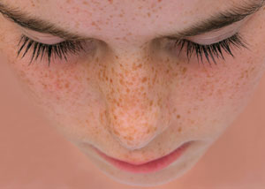
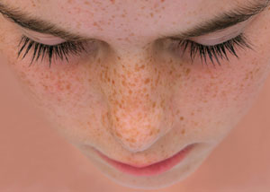

တင္း တိတ္
 

၁။ လတ္ ဆတ္ ေသာ သံပုရာရည္ ကုိ တင္း တိတ္ မ်ား ေပၚတြင္ လိမ္းပါ။ ၁၀-၁၅မိနစ္ ခန္႔ အၾကာတြင္ ေရခပ္ ေႏြး ေႏြးျဖင့္ ေဆးပါ။ ဒီနည္း ကုိ ပုံမွန္ လုပ္ ေဆာင္ ႏုိင္ ပါတယ္။
၂။ ပ်ားရည္ လက္ ဘက္ ရည္ ဇြန္း ၁ဇြန္းကုိ ေရ ေႏြးအနည္း ငယ္ ႏွင့္ ေရာျပီး တင္း တိတ္ မ်ား ေပၚတြင္ လိမ္းပါ။ ၁၀-၁၅မိနစ္ ခန္႔ အၾကာတြင္ ေရ ခပ္ ေႏြး ေႏြးျဖင့္ ေဆးပါ။
၃။ သ ေဘၤာသီးမွာ ပါတဲ့ ဓါတ္ ေတြက တင္း တိတ္ ေတြကုိ အ ေရာင္ ေဖ်ာ့ ေစတဲ့အတြက္ လတ္ ဆတ္ ေသာ သ ေဘၤာသီးေဖ်ာ္ ရည္ ကုိ ဂြမ္း ႏွင့္ တင္း တိတ္ မ်ား ေပၚ တုိက္ ရိုက္ လိမ္းပါ။ ၁၀-၁၅ မိနစ္ ခန္႔ အၾကာတြင္ ေရ ေအး ျဖင့္ ေဆးပါ။ ေန႔တုိင္း ျပဳလုပ္ ပါက တင္း တိတ္ မ်ား ေပ်ာက္ ကင္း ျပီး နူးညံ ေသာ အသားအ ေရကုိပါ ပုိင္ ဆုိင္ ရရွိမည္။
၄။ ခရမ္း ခ်ဥ္ သီး ေဖ်ာ္ ရည္ ကုိ တစ္ ေန႔တစ္ ခြက္ ေသာက္ သုံးျခင္း ျဖင့္ တင္း တိတ္ မ်ား ေလ်ာ့ပါး ေပ်ာက္ ကင္းႏုိင္ ပါသည္။
၅။ သခြားသီးကလည္း တင္း တိတ္ ႏွင့္ အမည္း စက္ မ်ားကုိ သက္ သာ ေပ်ာက္ ကင္း ေစႏိုင္ တဲ့ အစြမ္း ရွိလုိ႔ သခြားသီးကုိ အကြင္း လုိက္ သုိ႔ အရည္ ညွစ္ ျပီး လုိအပ္ ေသာ ေနရာမ်ားတြင္ လိမ္း ႏုိင္ ပါတယ္။
၆။ သခြားသီး၊ ခရမ္း ခ်ဥ္ သီး၊ မက္ မြန္ သီး၊ စ ေတာ္ ဘယ္ ရီသီး၊ အနီ ေရာင္ စပ်စ္ သီး ေျခာက္ တုိ႔ႏွင့္ ျပဳလုပ္ ထား ေသာ သဘာ၀ ေပါင္း တင္ မ်က္ ႏွာဖံုးမ်ားက သင့္ ရဲ႕ အသားအ ေရကုိ စုိျပည္ ေပ်ာ့ ေျပာင္း ေစႏုိင္ သလုိ တင္း တိတ္ တုိ႔ကုိလည္း သက္သာ ေလ်ာ့နည္း ေစပါတယ္။ ပုံမွန္ သုံးစြဲပါ။
ႏွစ္ သက္ ရာနည္း လမ္း တစ္ မ်ိဳးကိုသာ သံုးပါ။